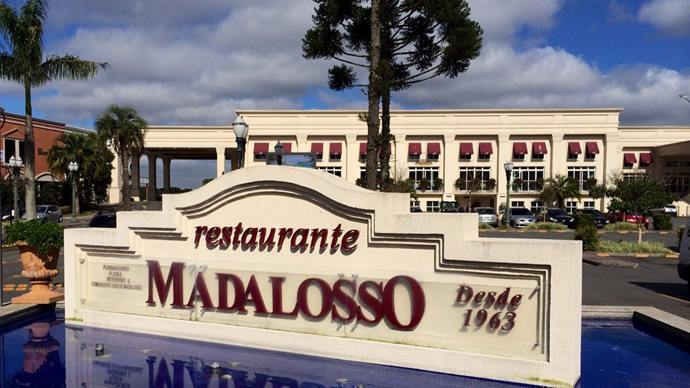
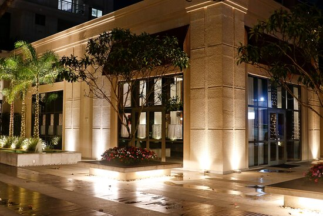
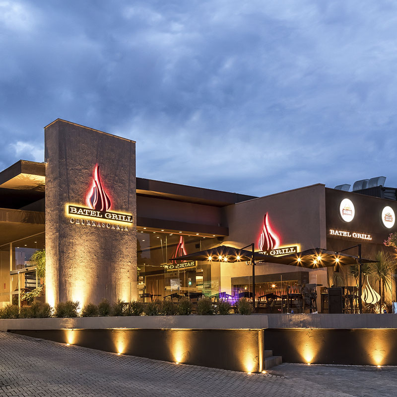
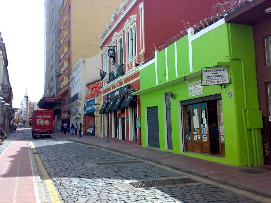

22.04.2024
Descubra os sabores autênticos de Curitiba em nosso site, destacando os restaurantes clássicos da cidade. Explore suas histórias, pratos icônicos e mergulhe na tradição gastronômica que define a capital paranaense.
O Madalosso é um icônico restaurante italiano em Curitiba, fundado em 1963. Reconhecido por seu ambiente acolhedor e por oferecer o maior rodízio de massas da América Latina, atrai tanto moradores locais quanto turistas em busca de uma autêntica experiência italiana.
O Ile de France é uma verdadeira embaixada da culinária francesa, onde os clientes desfrutam de pratos clássicos refinados em um ambiente encantador que evoca a atmosfera parisiense.
O Cantinho da Bica é um restaurante que oferece uma experiência gastronômica autêntica, com pratos caseiros da culinária regional em um ambiente acolhedor e familiar. É um destino popular para quem busca saborear a comida típica paranaense em uma atmosfera aconchegante.
A Batel Grill é um restaurante renomado, conhecido pelo seu churrasco rodízio de alta qualidade. Com ambiente sofisticado e serviço atencioso, é um destino popular para os amantes de carne na cidade.
O Restaurante São Franscico é um local icônico que oferece uma culinária caseira com sabor regional. Com um ambiente acolhedor e serviço atencioso, tornou-se um ponto de encontro querido na cidade, atraindo tanto moradores locais quanto visitantes em busca de uma experiência gastronômica autêntica e reconfortante.
| Restaurantes | Atendimento | Sabor | Total |
|---|---|---|---|
| Madalosso | 5.0 | 4.0 | 4.5 |
| Ile de France | 5.0 | 5.0 | 5.0 |
| Cantinho da Bica | 4.0 | 4.5 | 4.25 |
| Batel Grill | 5.0 | 5.0 | 5.0 |
| São Francisco | 4.0 | 4.0 | 4.0 |